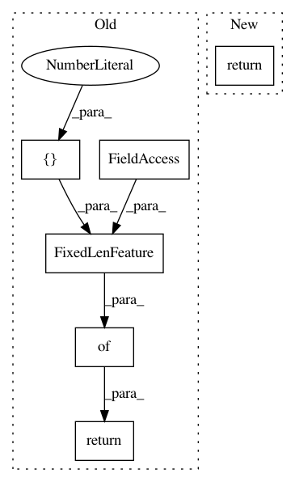

88b164b98c209ea8e2afbfae93a01b9aacd8b0ab,local_utils/data_utils.py,TextFeatureReader,read_features,#Any#Any#Any#Any#,206
Before Change
_, serialized_example = reader.read(filename_queue)
features = tf.parse_single_example(serialized_example,
features={
"images": tf.FixedLenFeature((), tf.string),
"imagenames": tf.FixedLenFeature([1], tf.string),
"labels": tf.VarLenFeature(tf.int64),
})
image = tf.decode_raw(features["images"], tf.uint8)
w, h = input_size
images = tf.reshape(image, [h, w, input_channels])
labels = features["labels"]
labels = tf.cast(labels, tf.int32)
imagenames = features["imagenames"]
return images, labels, imagenames
class TextFeatureIO(object):
After Change
filename_queue = tf.train.string_input_producer([tfrecords_path], num_epochs=num_epochs)
reader = tf.TFRecordReader()
_, serialized_example = reader.read(filename_queue)
return TextFeatureReader.extract_features(serialized_example, input_size, input_channels)
@staticmethod
def extract_features(serialized_sample, input_size: Tuple[int, int], input_channels: int) \
-> Tuple[tf.Tensor, tf.Tensor, tf.Tensor]:
In pattern: SUPERPATTERN
Frequency: 3
Non-data size: 6
Instances
Project Name: MaybeShewill-CV/CRNN_Tensorflow
Commit Name: 88b164b98c209ea8e2afbfae93a01b9aacd8b0ab
Time: 2018-09-28
Author: debenito@unternehmertum.de
File Name: local_utils/data_utils.py
Class Name: TextFeatureReader
Method Name: read_features
Project Name: tensorflow/hub
Commit Name: 7452c3bb197889a3e04005ce5bcf0e81b84e1e63
Time: 2019-05-22
Author: no-reply@google.com
File Name: tensorflow_hub/feature_column.py
Class Name: _ImageEmbeddingColumn
Method Name: _parse_example_spec
Project Name: tensorflow/hub
Commit Name: 7452c3bb197889a3e04005ce5bcf0e81b84e1e63
Time: 2019-05-22
Author: no-reply@google.com
File Name: tensorflow_hub/feature_column.py
Class Name: _TextEmbeddingColumn
Method Name: _parse_example_spec